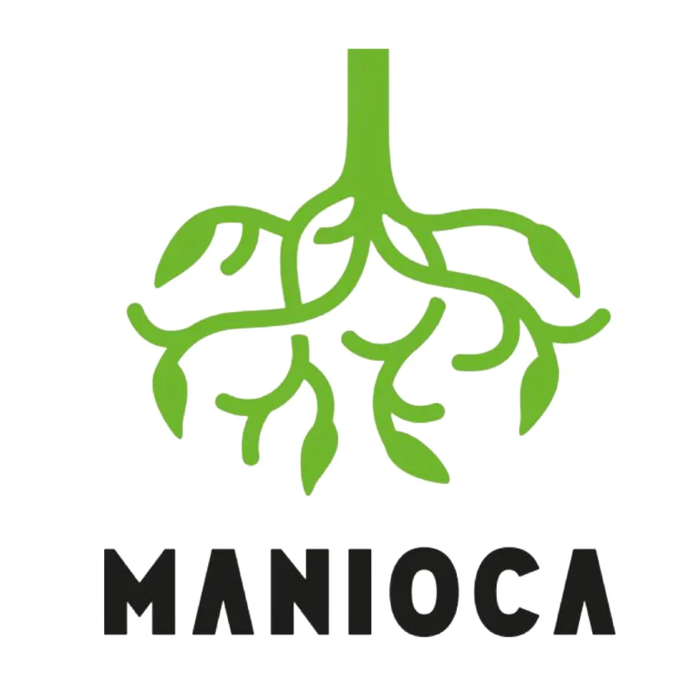

Nossos Parceiros


Cultura · Memória · Identidade
Nossos Parceiros

O Museu da Mandioca recebe grupos escolares, turistas e visitantes individuais. Nossa equipe está à disposição para criar uma experiência personalizada.